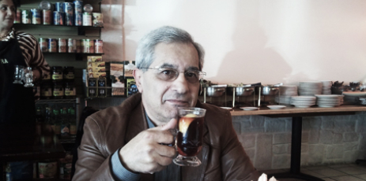

ПОЧЕМ НА РЫНКЕ КРЕСЛО ДЕПУТАТА?
Вершить политику с базарной дамой удобно, если деньги выше срама. Как жаль, что в аппарате у Ильхама так много овощного хлама.
В Баку по-прежнему партийные заказы на должности помимо нефти, газа. Почем на рынке кресло депутата? Оценит лишь правитель аппарата.
Обычный фрукт и не заметит сразу весомости высокого приказа. Хотя вносить налично предоплату - пустая трата. А порой чревато.
Когда Чеснок себя считает фруктом, базар фильтрует Огурец-инструктор, все овощи сочаться бурной спесью , а Баклажаны строятся под песню. А фрукты там, на площади Свободы, Лимон дожат, а Апельсин не в моде... Всё спорят меж собой, кто чист и краше. Хотя конец один: на нарах у параши.
Куда ни глянь, везде снуют агенты - враги умеют выбирать моменты: Саддам, Каддафи, даже Мубарак.... Вдогонку им спешит очередной Бурак.
Мораль проста – не думай, не гадай, - как логика Отца-Чекиста: “Коль скоро выпит даже чай, нужна ль к столу Редиска?”
Бейдулла Манафов
18-12-2012
Даллас, Техас
В Баку по-прежнему партийные заказы на должности помимо нефти, газа. Почем на рынке кресло депутата? Оценит лишь правитель аппарата.
Обычный фрукт и не заметит сразу весомости высокого приказа. Хотя вносить налично предоплату - пустая трата. А порой чревато.
Когда Чеснок себя считает фруктом, базар фильтрует Огурец-инструктор, все овощи сочаться бурной спесью , а Баклажаны строятся под песню. А фрукты там, на площади Свободы, Лимон дожат, а Апельсин не в моде... Всё спорят меж собой, кто чист и краше. Хотя конец один: на нарах у параши.
Куда ни глянь, везде снуют агенты - враги умеют выбирать моменты: Саддам, Каддафи, даже Мубарак.... Вдогонку им спешит очередной Бурак.
Мораль проста – не думай, не гадай, - как логика Отца-Чекиста: “Коль скоро выпит даже чай, нужна ль к столу Редиска?”
Бейдулла Манафов
18-12-2012
Даллас, Техас
Кавказский Центр Миротворческих Инициатив

© Ассоциация Текали - info@southcaucasus.com